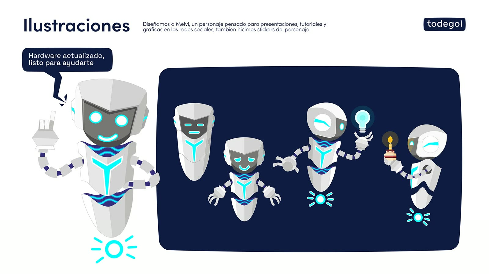
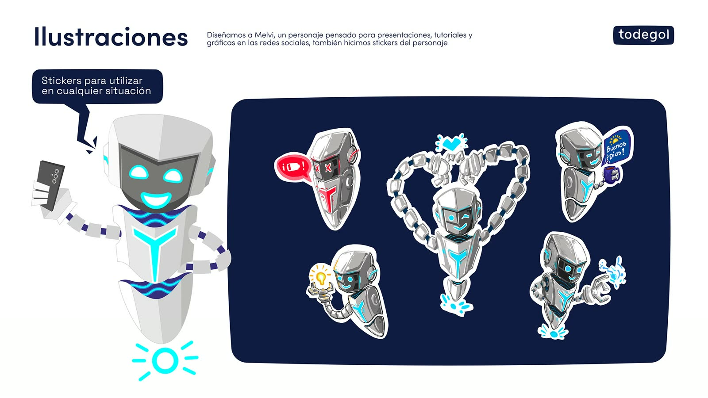
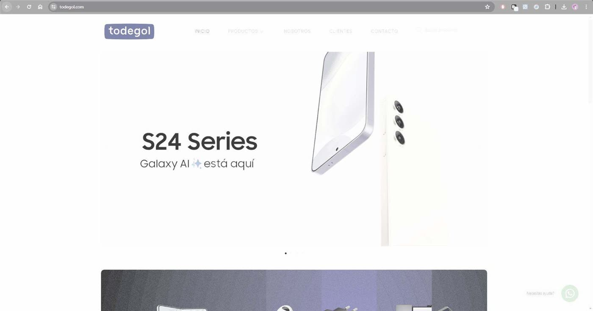

Branding · Personaje · 2022–2025
Todegol
y Melvi
Una marca acompañada en todas sus capas: del logo al personaje 3D, del feed al punto de venta.
Mi contribución
Trabajé con Todegol, distribuidora de Samsung y otras marcas de tecnología, de 2022 a 2025. Diseñé su identidad a partir del nombre y creé a Melvi, el robot de la marca.
Idea
Un contenedor que crece
El nombre vive dentro de un contenedor: a medida que la marca crece, el contenedor se expande y redondea sus esquinas. De ahí salen la normalización, las versiones alternativas y el sistema gráfico.


Personaje
Melvi, el robot de la marca
Melvi vive en ilustración, en vector y en 3D, y tiene su propio set de 19 stickers.






6 de los 19 stickers 3D de Melvi
Campañas y web
Del feed a todegol.com
Día del Padre, con KV e ilustraciones de una pareja de personajes, y el diseño de todegol.com, de la maqueta en Illustrator y Figma al armado en WordPress. También diseñé una propuesta de exhibidor multimarca en 3D.


Web · todegol.com
La web, en una mirada
Banners de portada y de marca, de 2023 a 2025: Televisores, Soundcore, Anker, Eufy, Lensun y Player, armados sobre el diseño del sitio. El sitio sigue en línea.

Créditos
- Cliente
- Todegol
- Identidad, personaje, ilustración, 3D y diseño
- Kevin Mancuello
- Día del Padre: KV e ilustraciones
- Kevin Mancuello
- Día del Padre: contenido y redacción
- Nicolás Escoz